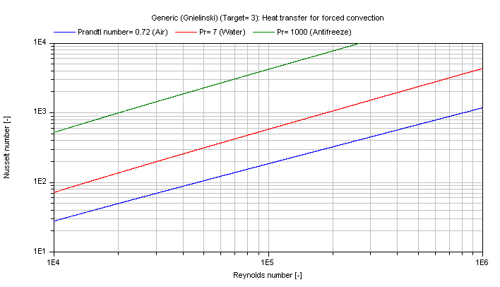

Modelica.Fluid.Dissipation.Utilities.SharedDocumentation.HeatTransfer.General
Modelica.Fluid.Dissipation.Utilities.SharedDocumentation.HeatTransfer.General
Modelica.Fluid.Dissipation.Utilities.SharedDocumentation.HeatTransfer.General
Modelica.Fluid.Dissipation.Utilities.SharedDocumentation.HeatTransfer.General
Extends from Modelica.Icons.Information (Icon for general information packages).
| Name | Description |
|---|---|
Modelica.Fluid.Dissipation.Utilities.SharedDocumentation.HeatTransfer.General.kc_approxForcedConvectionApproximate calculation of the mean convective heat transfer coefficient kc for forced convection with a fully developed fluid flow in a turbulent regime.
There are basically three differences:
The mean convective heat transfer coefficient kc is approximated through different Nusselt number Nu correlations out of [Bejan 2003, p. 424 ff].
Roughest approximation according to Dittus/Boelter (1930):
Nu_1 = 0.023 * Re^(4/5) * Pr^(exp_Pr)
Middle approximation according to Sieder/Tate (1936) considering the temperature dependence of the fluid properties:
Nu_2 = 0.023 * Re^(4/5) * Pr^(1/3) * (eta/eta_wall)^(0.14)
Finest approximation according to Gnielinski (1976):
Nu_3 = 0.0214 * [Re^(0.8) - 100] * Pr^(0.4) for Pr ≤ 1.5
= 0.012 * [Re^(0.87) - 280] * Pr^(0.4) for Pr > 1.5
The mean convective heat transfer coefficient kc is calculated by:
kc = Nu * lambda / d_hyd
with
| eta | as dynamic viscosity of fluid [Pa.s], |
| eta_wall | as dynamic viscosity of fluid at wall temperature [Pa.s], |
| exp_Pr | as exponent for Prandtl number w.r.t. Dittus/Boelter (0.4 for heating or 0.3 for cooling) [-], |
| kc | as mean convective heat transfer coefficient [W/(m2.K)], |
| lambda | as heat conductivity of fluid [W/(m.K)], |
| d_hyd | as hydraulic diameter [m], |
| Nu_1/2/3 | as mean Nusselt number [-], |
| Pr | as Prandtl number [-], |
| Re | as Reynolds number [-]. |
The mean Nusselt number Nu representing the mean convective heat transfer coefficient kc for Prandtl numbers of different fluids is shown in the figure below.
Dittus/Boelter (target = Modelica.Fluid.Dissipation.Utilities.Types.kc_general.Rough)

Sieder/Tate (Target = Modelica.Fluid.Dissipation.Utilities.Types.kc_general.Middle)

Gnielinski (Target = Modelica.Fluid.Dissipation.Utilities.Types.kc_general.Finest)

Note that all fluid properties shall be calculated with the mean temperature of the fluid between the entrance and the outlet of the generic device.
Extends from Modelica.Icons.Information (Icon for general information packages).
Automatically generated Fri Oct 02 11:08:19 2015.